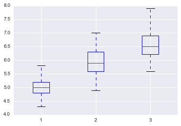
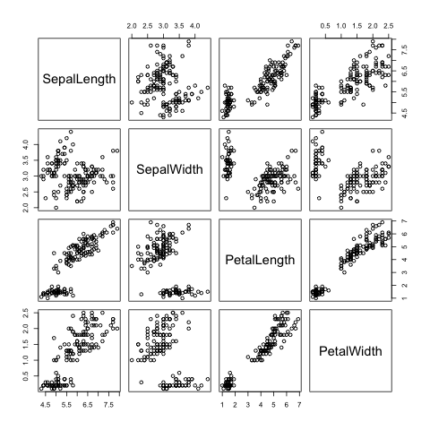
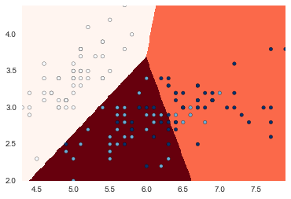

データサイエンティスト養成読本vol.1（Python 機械学習）¶
In [1]:
import numpy as np
import pandas as pd
import matplotlib.pyplot as plt
import seaborn as sns
%matplotlib inline
irisデータ読み込み(from pandas repogitory)¶
In [2]:
import os
iris_pandas_url = "https://raw.githubusercontent.com/pydata/pandas/master/doc/data/iris.data"
iris_data_file_name = "iris.data.csv"
if os.path.exists(iris_data_file_name):
iris = pd.read_csv(iris_data_file_name)
else:
iris = pd.read_csv(iris_pandas_url)
iris.to_csv(iris_data_file_name, index=False)
iris.info()
<class 'pandas.core.frame.DataFrame'>
RangeIndex: 150 entries, 0 to 149
Data columns (total 5 columns):
SepalLength 150 non-null float64
SepalWidth 150 non-null float64
PetalLength 150 non-null float64
PetalWidth 150 non-null float64
Name 150 non-null object
dtypes: float64(4), object(1)
memory usage: 5.9+ KB
In [3]:
setosa = iris[iris.Name == "Iris-setosa"]
versicolor = iris[iris.Name == "Iris-versicolor"]
virginica = iris[iris.Name == "Iris-virginica"]
len(setosa), len(versicolor), len(virginica),
Out[3]:
(50, 50, 50)
In [4]:
iris.pivot_table(index="Name", aggfunc=np.mean)
Out[4]:
| PetalLength | PetalWidth | SepalLength | SepalWidth | |
|---|---|---|---|---|
| Name | ||||
| Iris-setosa | 1.464 | 0.244 | 5.006 | 3.418 |
| Iris-versicolor | 4.260 | 1.326 | 5.936 | 2.770 |
| Iris-virginica | 5.552 | 2.026 | 6.588 | 2.974 |
In [5]:
pd.concat(
[
setosa.sum(),
setosa.mean(), setosa.median(),
setosa.min(), setosa.max(),
setosa.var(), setosa.std(),
], axis=1,
keys=["sum", "mean", "median", "min", "max", "var", "std"]
)
Out[5]:
| sum | mean | median | min | max | var | std | |
|---|---|---|---|---|---|---|---|
| Name | Iris-setosaIris-setosaIris-setosaIris-setosaIr... | NaN | NaN | Iris-setosa | Iris-setosa | NaN | NaN |
| PetalLength | 73.2 | 1.464 | 1.5 | 1 | 1.9 | 0.030106 | 0.173511 |
| PetalWidth | 12.2 | 0.244 | 0.2 | 0.1 | 0.6 | 0.011494 | 0.107210 |
| SepalLength | 250.3 | 5.006 | 5.0 | 4.3 | 5.8 | 0.124249 | 0.352490 |
| SepalWidth | 170.9 | 3.418 | 3.4 | 2.3 | 4.4 | 0.145180 | 0.381024 |
In [6]:
setosa.describe().T
Out[6]:
| count | mean | std | min | 25% | 50% | 75% | max | |
|---|---|---|---|---|---|---|---|---|
| SepalLength | 50.0 | 5.006 | 0.352490 | 4.3 | 4.800 | 5.0 | 5.200 | 5.8 |
| SepalWidth | 50.0 | 3.418 | 0.381024 | 2.3 | 3.125 | 3.4 | 3.675 | 4.4 |
| PetalLength | 50.0 | 1.464 | 0.173511 | 1.0 | 1.400 | 1.5 | 1.575 | 1.9 |
| PetalWidth | 50.0 | 0.244 | 0.107210 | 0.1 | 0.200 | 0.2 | 0.300 | 0.6 |
In [7]:
[
np.arange(0, 1.1, 0.1),
np.linspace(0, 1, 11)
]
Out[7]:
[array([ 0. , 0.1, 0.2, 0.3, 0.4, 0.5, 0.6, 0.7, 0.8, 0.9, 1. ]),
array([ 0. , 0.1, 0.2, 0.3, 0.4, 0.5, 0.6, 0.7, 0.8, 0.9, 1. ])]
In [8]:
setosa.describe(include="all", percentiles=np.linspace(0.1, 0.9, 9)).T
Out[8]:
| count | unique | top | freq | mean | std | min | 10% | 20% | 30.0% | 40% | 50% | 60% | 70% | 80% | 90% | max | |
|---|---|---|---|---|---|---|---|---|---|---|---|---|---|---|---|---|---|
| SepalLength | 50 | NaN | NaN | NaN | 5.006 | 0.35249 | 4.3 | 4.59 | 4.7 | 4.8 | 4.96 | 5 | 5.1 | 5.1 | 5.32 | 5.41 | 5.8 |
| SepalWidth | 50 | NaN | NaN | NaN | 3.418 | 0.381024 | 2.3 | 3 | 3.1 | 3.2 | 3.36 | 3.4 | 3.5 | 3.53 | 3.72 | 3.9 | 4.4 |
| PetalLength | 50 | NaN | NaN | NaN | 1.464 | 0.173511 | 1 | 1.3 | 1.3 | 1.4 | 1.4 | 1.5 | 1.5 | 1.5 | 1.6 | 1.7 | 1.9 |
| PetalWidth | 50 | NaN | NaN | NaN | 0.244 | 0.10721 | 0.1 | 0.1 | 0.2 | 0.2 | 0.2 | 0.2 | 0.2 | 0.3 | 0.3 | 0.4 | 0.6 |
| Name | 50 | 1 | Iris-setosa | 50 | NaN | NaN | NaN | NaN | NaN | NaN | NaN | NaN | NaN | NaN | NaN | NaN | NaN |
In [9]:
setosa.corr()
Out[9]:
| SepalLength | SepalWidth | PetalLength | PetalWidth | |
|---|---|---|---|---|
| SepalLength | 1.000000 | 0.746780 | 0.263874 | 0.279092 |
| SepalWidth | 0.746780 | 1.000000 | 0.176695 | 0.279973 |
| PetalLength | 0.263874 | 0.176695 | 1.000000 | 0.306308 |
| PetalWidth | 0.279092 | 0.279973 | 0.306308 | 1.000000 |
In [10]:
setosa.cov()
Out[10]:
| SepalLength | SepalWidth | PetalLength | PetalWidth | |
|---|---|---|---|---|
| SepalLength | 0.124249 | 0.100298 | 0.016139 | 0.010547 |
| SepalWidth | 0.100298 | 0.145180 | 0.011682 | 0.011437 |
| PetalLength | 0.016139 | 0.011682 | 0.030106 | 0.005698 |
| PetalWidth | 0.010547 | 0.011437 | 0.005698 | 0.011494 |
In [11]:
fig, axes = plt.subplots(1, 2, figsize=(8, 4))
iris.SepalLength.plot.hist(ax=axes[0])
axes[0].set_xlabel("SepalLength")
setosa.SepalLength.plot.hist(ax=axes[1])
plt.tight_layout()

In [12]:
pd.concat(
{
"setosa": setosa.SepalLength,
"versicolor": versicolor.SepalLength,
"virginica": virginica.SepalLength
}, axis=1
).plot.box()
Out[12]:
<matplotlib.axes._subplots.AxesSubplot at 0x117375e10>

In [13]:
data = [setosa.SepalLength, versicolor.SepalLength, virginica.SepalLength]
plt.boxplot(data)
"dummy"
Out[13]:
'dummy'

In [14]:
setosa.plot.scatter(x="SepalLength",y="SepalWidth")
Out[14]:
<matplotlib.axes._subplots.AxesSubplot at 0x119eff4e0>

In [15]:
setosa.corr().ix["SepalLength", "SepalWidth"]
Out[15]:
0.74678037326392688
In [16]:
sns.pairplot(setosa)
plt.tight_layout()

In [17]:
from sklearn import linear_model
np.random.seed(0)
linear_regr = linear_model.LinearRegression()
X = setosa[["SepalLength"]]
Y = setosa[["SepalWidth"]]
linear_regr.fit(X, Y)
plt.scatter(X, Y)
# http://sucrose.hatenablog.com/entry/2013/03/16/162019
px = np.arange(X.min(), X.max(), 0.01)[:, np.newaxis]
py = linear_regr.predict(px)
# print(px.shape, py.shape)
plt.plot(px, py, color="blue", linewidth=3)
plt.xlabel("SepalLength")
plt.ylabel("SepalWidth")
linear_regr.coef_, linear_regr.intercept_, linear_regr.score(X, Y)
Out[17]:
(array([[ 0.80723367]]), array([-0.62301173]), 0.55768092589220974)

In [18]:
linear_regr = linear_model.LinearRegression()
X = setosa[["SepalLength", "PetalLength", "PetalWidth"]]
Y = setosa[["SepalWidth"]]
linear_regr.fit(X, Y)
linear_regr.coef_, linear_regr.intercept_, linear_regr.score(X, Y)
Out[18]:
(array([[ 0.79303981, -0.09677873, 0.31530122]]),
array([-0.48720671]),
0.56492621264573206)
In [20]:
import pyper
import os
image_file_name = "image.png"
r_source = """library(dplyr)
png("{0}", width = 480, height = 480, pointsize = 12, bg = "white", res = NA)
pairs(select(r_data, c(-Name)))
dev.off()
""".format(image_file_name)
r = pyper.R(use_pandas = "True")
r_source_file = "example.R"
r.assign("r_data", iris)
print(r("summary(r_data)"))
with open(r_source_file, "w", encoding="sjis") as f:
f.write(r_source)
print(r("source(file='{}')".format(r_source_file)))
os.remove(r_source_file)
from IPython.core.display import Image
Image(image_file_name)
#os.remove(image_file_name)
try({summary(r_data)})
SepalLength SepalWidth PetalLength PetalWidth
Min. :4.300 Min. :2.000 Min. :1.000 Min. :0.100
1st Qu.:5.100 1st Qu.:2.800 1st Qu.:1.600 1st Qu.:0.300
Median :5.800 Median :3.000 Median :4.350 Median :1.300
Mean :5.843 Mean :3.054 Mean :3.759 Mean :1.199
3rd Qu.:6.400 3rd Qu.:3.300 3rd Qu.:5.100 3rd Qu.:1.800
Max. :7.900 Max. :4.400 Max. :6.900 Max. :2.500
Name
Iris-setosa :50
Iris-versicolor:50
Iris-virginica :50
<pyper.R object at 0x11b7455f8>
try({source(file='example.R')})
次のパッケージを付け加えます: ‘dplyr’
以下のオブジェクトは ‘package:stats’ からマスクされています:
filter, lag
以下のオブジェクトは ‘package:base’ からマスクされています:
intersect, setdiff, setequal, union
Out[20]:

In [25]:
# k-means
def category2int(x):
category = {
"Iris-setosa": 0,
"Iris-versicolor": 1,
"Iris-virginica": 2,
}
return category[x]
In [45]:
from sklearn.cluster import KMeans
X = iris[["SepalLength", "SepalWidth"]]
kmeansCls = KMeans(n_clusters=3)
kmeansCls.fit(X)
[print(a, "\n", getattr(kmeansCls, a)) for a in dir(kmeansCls) if not a.startswith("_") and a.endswith("_")]
Y = iris.Name.map(category2int)
xMin = X.SepalLength.min()
xMax = X.SepalLength.max()
yMin = X.SepalWidth.min()
yMax = X.SepalWidth.max()
xx, yy = np.meshgrid(np.arange(xMin, xMax, 0.01), np.arange(yMin, yMax, 0.01))
Z = kmeansCls.predict(np.c_[xx.ravel(), yy.ravel()]).reshape(xx.shape)
plt.xlim(xx.min(), xx.max())
plt.ylim(yy.min(), yy.max())
plt.pcolormesh(xx, yy, Z, cmap=plt.cm.Reds)
plt.scatter(X.SepalLength, X.SepalWidth, c=np.array(Y), cmap=plt.cm.Blues)
cluster_centers_
[[ 5.006 3.418 ]
[ 6.81276596 3.07446809]
[ 5.77358491 2.69245283]]
inertia_
37.1237021277
labels_
[0 0 0 0 0 0 0 0 0 0 0 0 0 0 0 0 0 0 0 0 0 0 0 0 0 0 0 0 0 0 0 0 0 0 0 0 0
0 0 0 0 0 0 0 0 0 0 0 0 0 1 1 1 2 1 2 1 2 1 2 2 2 2 2 2 1 2 2 2 2 2 2 2 2
1 1 1 1 2 2 2 2 2 2 2 2 1 2 2 2 2 2 2 2 2 2 2 2 2 2 1 2 1 1 1 1 2 1 1 1 1
1 1 2 2 1 1 1 1 2 1 2 1 2 1 1 2 2 1 1 1 1 1 2 2 1 1 1 2 1 1 1 2 1 1 1 2 1
1 2]
n_iter_
6
Out[45]:
<matplotlib.collections.PathCollection at 0x11cebd710>

In [47]:
plt.pcolormesh(xx, yy, Z, cmap=plt.cm.Reds)
plt.scatter(X.SepalLength, X.SepalWidth, c=kmeansCls.labels_, cmap=plt.cm.Blues)
Out[47]:
<matplotlib.collections.PathCollection at 0x11afeb940>

In [42]:
kmeansCls.predict(np.c_[xx.ravel(), yy.ravel()])
Out[42]:
array([1, 1, 1, ..., 0, 0, 0], dtype=int32)
In [ ]:
In [ ]: